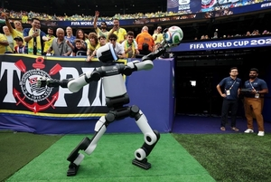
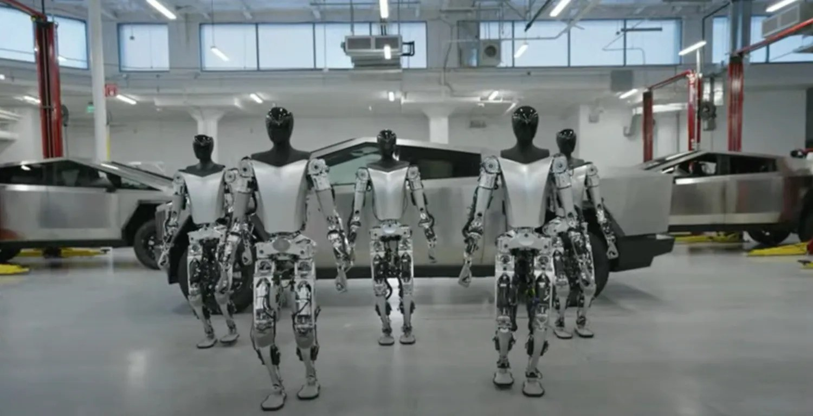

| 重点新闻 |
WAIC 具身展区：从“身体竞赛”转向“大脑竞赛” 7月20日人民网转载《证券日报》现场报道：WAIC 2026 具身智能参展企业增至200余家，展出208款终端、超300台真机；关键词从翻跟头转向“量产、适配、场景交付”。60台机器人承担导览递送等公共服务，乐聚等展示连续数小时产线作业，梅卡曼德演示多机协作与“一脑多形”。编辑判断：展会叙事转折真实，但“连续运行”仍需第三方工时与故障数据背书，不宜把展台时长直接外推为工厂产能。 人民网 |
证监会同意宇树科技科创板 IPO 注册 证监会《关于同意宇树科技股份有限公司首次公开发行股票注册的批复》（证监许可〔2026〕1612号）落款2026年7月1日，同意其科创板首发注册，批复自同意注册之日起12个月内有效。编辑观点：这是资本市场对人形/四足整机龙头的明确信号；注册生效不等于交付兑现，仍需跟踪发行节奏、募投产线与出货结构。日期略早于本期周窗口，但对本周产业定价影响持续。 中国证监会 |
新华网：从“表演模式”转向“作业模式” 新华社稿件梳理工信部、国资委实景实训专项的政策含义：到2026年底要在一批代表性场景完成应用验证与常态部署，真正开启“作业模式”。文中强调长期在线、低故障与可测算投入产出，才是规模化门槛。编辑判断：这与本周标委会“标准周”、产量口径同属一条主线——把舞台时长换成可复现工时，是产业卫生学的核心尺子。日期略早于本期窗口，但对本周政策落地讨论仍具对照价值。 新华网 |
本期主条  现代汽车集团推进全资控股波士顿动力 《韩国先驱报》报道，软银行使卖出期权拟出售剩余约9.65%波士顿动力股权，交易完成后现代汽车集团关联方将实现全资控股。集团计划2028年起在美国佐治亚工厂以 Atlas 做人形零件排序，2030年扩展至部件装配，并规划2028年3万台年产能目标。7月5日 Atlas 还在世界杯赛场递送比赛用球。编辑观点：股权整合降低决策摩擦，但量产与产线可靠性仍是2028节点前的主风险。（英文科技媒体7月16日亦有跟进） The Korea Herald |

Engadget：现代加速 Atlas 商业化与 Physical AI 链条整合 Engadget 7月16日援引彭博社称，现代正审视合同权利以收购软银剩余股权（报道口径约9.9%、估值约3.25亿美元），并引用现代声明称将加速 Physical AI 与机器人方案的开发、验证与商业化；Atlas 与英伟达、Google DeepMind 合作推进。编辑判断：与《韩国先驱报》相互印证股权交易方向；对读者而言，重点不是体育场秀，而是佐治亚工厂时间表是否按节拍滑动。 Engadget |

Figure 官方：F.03 入驻宝马 Hall 52，排序物流上线 Figure 于6月30日官方博客称，Figure 03 已进入斯巴坦堡 Hall 52，任务从钣金上下料升级为排序物流：在非规整料箱中拣选并装入排序台车，再由转运系统送达工位；并强调 Helix 02 驱动的 loco-manipulation。文中回溯 Figure 02 曾支持逾3万辆车组装。编辑判断：厂商稿需与宝马 PressClub 对照阅读；价值在于任务边界诚实——重复、高损耗的物流排序，而非炫技装配。 Figure AI |
本期主条  Electrek：弗里蒙特改建 Optimus，Q1 电话会给出启动窗口 Electrek 据特斯拉 Q1 2026 财报电话会报道：Model S/X 线于5月初收官后改建 Optimus，马斯克称目标在7月底或8月启动生产，但初期会“相当慢”，并因约1万个独特零件拒绝给出2026产量指引。编辑判断：这是可回溯的管理层口径，而非二手改写；对本周读者，应把“产线就位”与“稳定出货”分开记账，并与宝马—Figure 的可核验部署对照。 Electrek |